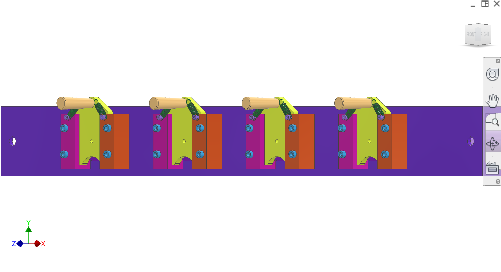
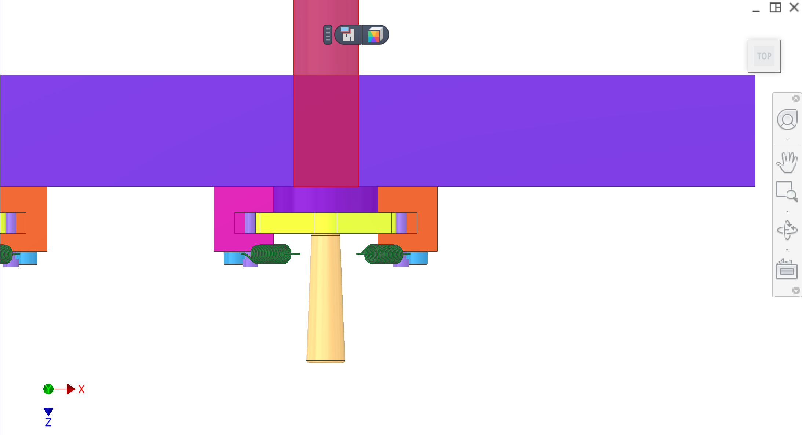
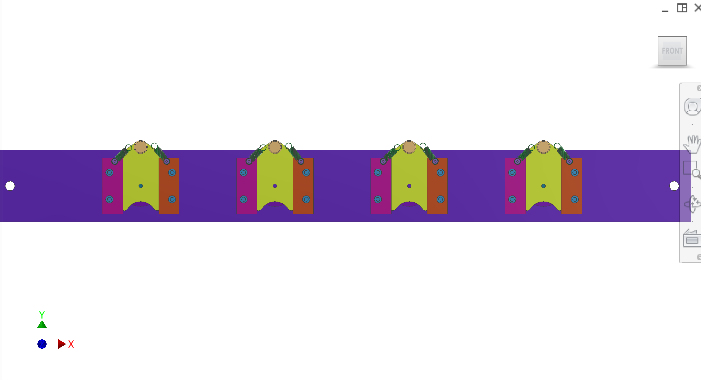

Figura 1. Suporte de acionamento do mergulhador no contexto completo de montagem de ejeção do núcleo (CAD compartilhado).
1 / 4
← Voltar à ejeção do núcleo·P6 RFP
O êmbolo é o suporte de accionamento dentro doejeção do núcleosistema que carrega quatro êmbolos e transmite força axial das hastes de acionamento. Ele empurra e puxa as bases do êmbolo estritamente na direção do eixo de ejeção, evitando momentos de racking e mantendo os êmbolos concêntricos com otubo de filtro.
O suporte da accionamento do êmbolo liga a accionamento da accionamento da accionamento (através de hastes da accionamento do êmbolo) aos quatro êmbolos de ejecção do núcleo. O seu principal requisito éPureza cinemática: o suporte deve ser aplicadoUnicamente força axial(para a frente/para trás ao longo do eixo de ejecção da máquina) e não deve introduzir momentos à esquerda/direita/para cima/para baixo nos êmbolos. Manter isto evita o modo de falha crítica dePiscagem do êmboloe a furar.
Suporte de acionamento, interfaces de atuação, e (opcional) mecanismo de inserção/remoção estilo guilhotina.
| Cor( s) | Componente |
|---|---|
| — | Suporte de acionamento do mergulhador— carrega quatro êmbolos e move-se na direcção de ejecção. |
| — | Guilhotina / acesso de inserção deslizante— mecanismo opcional que permite remover os êmbolos para o serviço, mantendo o comportamento de empurrar/puxar restringido. |
Montagem CAD dePlug-ejection/imagens/com foco em suporteiso / topo / frenteviews nesta página. ConsultarFigura 1–Figura 4.
O suporte deve manter os êmbolos concêntricos com tubos de filtro/corte de plugue para evitar racking e garantir o desempenho de vedação.
| Parte | Interface / tolerância | Relacionado |
|---|---|---|
| Caminho de carga somente axial | O suporte não deve transmitir os momentos laterais/para cima/para baixo para os êmbolos; | Sistema de acionamento de mergulhadores em painéis laterais |
| Concentricidade | O eixo do mergulhador deve permanecer paralelo ao eixo do tubo filtrante sobre o curso completo (o bloqueio deve ser seguro) | Outras máquinas e aparelhos, n.e. |